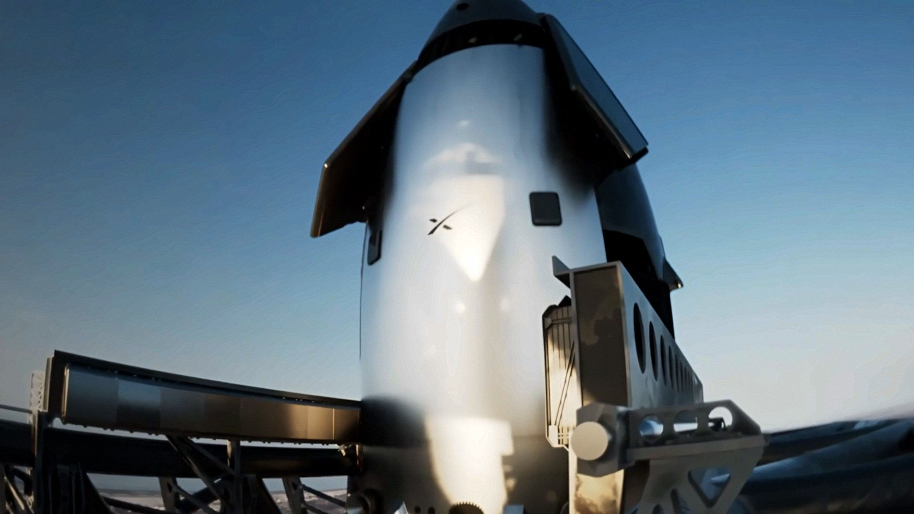
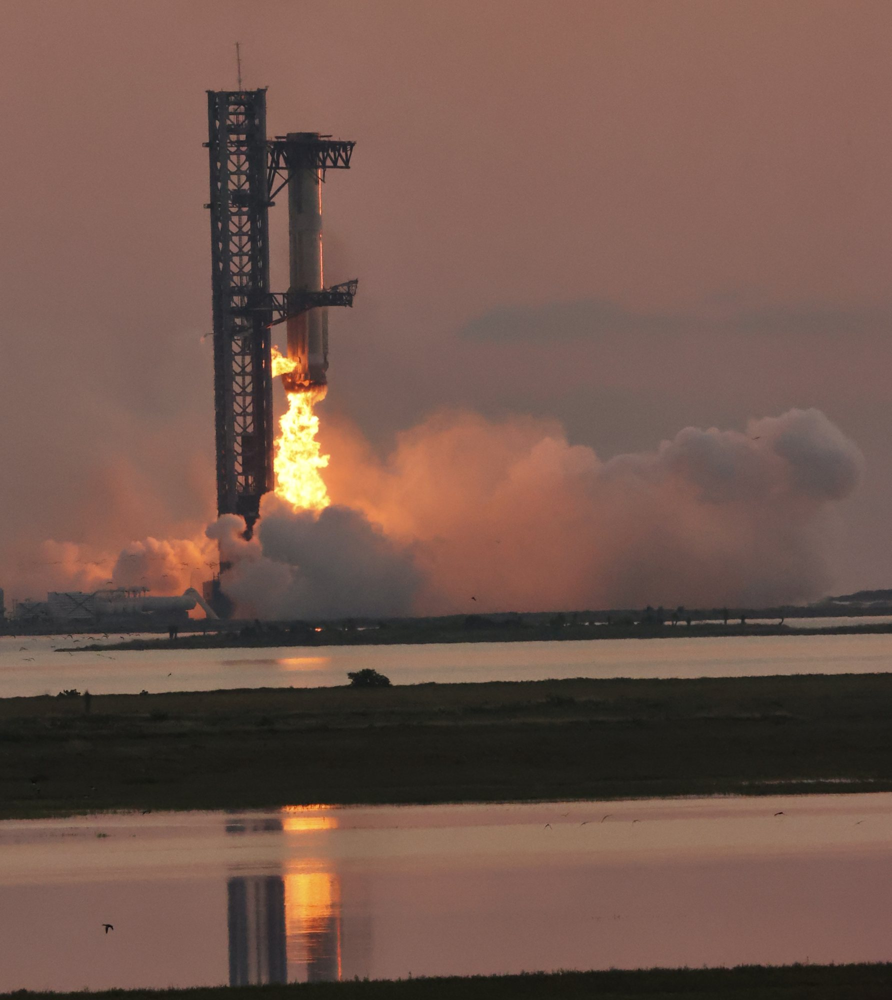
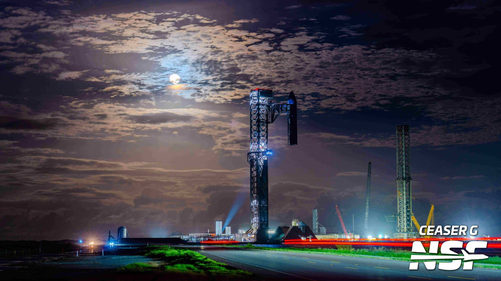
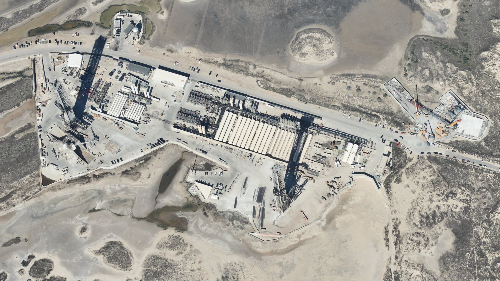

Il 5 novembre 2026, sul palco dell’UP.Summit, Kiko Dontchev ha detto che SpaceX punta al venerdì 13 novembre per il lancio di Starship Flight 15. È la prima data di volo nominata in pubblico da un dirigente operativo dell’azienda: finora il calendario era filtrato da slide di pianificazione del traffico aereo e da chiusure stradali della contea. Lo stesso giorno, rispondendo a una domanda diretta sul profilo, Eric Berger di Ars Technica ha confermato che resta in programma di riprendere sia il booster sia la Ship.
Da slide e chiusure stradali a una data detta da SpaceX
Fino a ieri il pubblico leggeva Flight 15 soprattutto attraverso documenti esterni. Le slide FAA/CADENA avevano indicato prima un «non prima dell’8 novembre», poi il 12. Il calendario delle chiusure stradali della contea di Cameron, aggiornato a fine ottobre, aveva allineato la prima data possibile al 12 novembre. Il 5 novembre arriva un salto di qualità: Dontchev, che guida i lanci, mette un giorno sul tavolo, il venerdì 13. La stessa presentazione CADENA aggiornata sposta la NET di un giorno, al 13 novembre, coerente con quella dichiarazione.
NET significa «no earlier than»: non prima di. Non è una garanzia di decollo quel giorno. Meteo, rampa, veicoli e via libera regolatorio possono ancora spostare tutto. SpaceX non ha pubblicato una missione ufficiale su X né un webcast. Ma una data detta da chi gestisce i lanci vale più di una slide di coordinamento aereo.
Il giorno scelto cade nella finestra che Elon Musk aveva abbozzato il 10 ottobre a Giga Texas («probabilmente un po’ prima del Thanksgiving») e ribadito il 20 ottobre nella teleconferenza sui conti del terzo trimestre. Flight 14, il 28 settembre, aveva messo in orbita Starship per la prima volta e rilasciato 26 satelliti Starlink V3, con un rientro in mare dopo lo spegnimento anticipato di un motore che Musk aveva attribuito al software dei computer di bordo.

Perché il catch della Ship è un salto diverso
Il Super Heavy è già stato ripreso dalla torre tre volte, sui voli 5, 7 e 8. La manovra è spettacolare, ma il booster torna da velocità e quote molto inferiori a quelle orbitali. La Ship, invece, rientra da velocità orbitale: scudo termico, plasma, assetto, frenata e avvicinamento preciso alla torre dopo un’intera missione in orbita. Finora ogni Starship è finita in oceano. Portarla a casa significa una traiettoria di rientro che punta verso terra, non verso il mare aperto, e una serie di criteri di commit che, se non sono tutti verdi, fanno dirottare il veicolo sull’acqua come già avviene per i booster.
Nella teleconferenza del 20 ottobre Musk aveva detto che Flight 15 avrebbe tentato di riprendere entrambi gli stadi, e aveva stimato le probabilità di riuscita del catch della Ship come «more likely than not», più probabili del contrario. Shotwell, nella stessa occasione, aveva parlato di un confronto «significativo e costruttivo» con la FAA e di un’aspettativa di licenza che includa il ritorno al sito di lancio e la presa con la torre di entrambi gli stadi. L’animazione trasmessa in quel webcast mostra proprio la Ship che si raddrizza sopra Starbase e scende nei bracci.
Musk ha già chiamato il passo successivo: un Flight 16 in cui booster e Ship volano di nuovo. NASASpaceflight indica Ship 43, la prossima in coda, per gli static fire a dicembre. Se Flight 15 chiude il cerchio del recupero orbitale, il ritmo di riutilizzo diventa il tema vero dei mesi dopo.

I veicoli sono pronti: Booster 22 e Ship 42
Sul piano hardware il lavoro di fine ottobre ha chiuso i banchi. Booster 22, il 25 ottobre sul Pad 2, ha acceso tutti i 33 Raptor per la durata piena dello static fire. SpaceX lo ha confermato su X la sera stessa. Ship 42 ha seguito il giorno dopo con un’accensione a un solo motore che simula la manovra di rientro, e il 27 ottobre con 60 secondi a sei motori. «Ship 42 static fires complete», ha scritto SpaceX il 28 ottobre.
A settembre Ship 42 aveva già percorso a terra la prova di presa: i bracci del Pad 2 l’avevano sollevata, allineata e collegata al braccio dei quick disconnect mentre restava appesa alla torre. A fine ottobre lo stesso esercizio è toccato a Ship 43, destinata a Flight 16. Non è il volo, ma è la prova che i controllori sanno gestire una nave appena «presa» e metterla in sicurezza.

Il collo di bottiglia resta la carta FAA
La pagina pubblica della FAA dedicata a Starship non elenca ancora una licenza per Flight 15. Senza quel documento non si decolla, e soprattutto non si rientra verso terra con la Ship. Il profilo oceanico usato finora è più semplice da autorizzare; il profilo «return to launch site» per lo stadio superiore richiede analisi di sicurezza su una traiettoria che passa sopra zone abitate o comunque verso il sito.
È questo, più degli static fire, a tenere il calendario. I veicoli possono aspettare qualche giorno in Mega Bay; la licenza no. Se arriva in tempo utile, il 13 novembre resta in piedi come obiettivo. Se no, la NET scorre ancora.

Cosa seguire da qui al 13
Tre segnali contano più degli altri. Il primo è la pubblicazione della licenza FAA, con l’eventuale autorizzazione esplicita al ritorno della Ship a Starbase e alla presa con la torre. Il secondo è un post o una pagina missione di SpaceX che fissi ora, finestra e profilo: finché non arriva, il 13 novembre resta una data obiettivo, non un countdown. Il terzo è il caricamento dei satelliti Starlink su Ship 42 e il trasferimento in rampa, ultimi gesti visibili prima del giorno di volo.
| Data | Segnale | Che cosa dice |
|---|---|---|
| 20 ottobre | Teleconferenza Q3 | Musk: Flight 15 proverà il catch di booster e Ship; probabilità di riuscita «more likely than not» |
| 25–28 ottobre | Static fire | B22 a 33 motori; S42 a un motore e a sei motori, prove chiuse |
| fine ottobre | Contea / CADENA | Prima data possibile spostata dall’8 al 12 novembre |
| 5 novembre | UP.Summit + CADENA | Dontchev indica il 13 novembre; CADENA allinea la NET al 13 |
| 13 novembre | Obiettivo | Data target per Flight 15 e primo tentativo di catch della Ship; ora e via libera ancora da confermare |

Il dossier che passa in archivio
La breaking precedente, sull’accordo fra Starlink Mobile e Qualcomm per le piattaforme Dragonwing delle macro celle 5G terrestri americane, passa all’archivio Notizie. Qui resta in primo piano il calendario di Flight 15: una data detta da SpaceX, un profilo di doppia presa già annunciato a ottobre, veicoli pronti e una licenza che ancora manca.
Se il 13 novembre terrà, sarà il primo tentativo di recuperare interamente un razzo di classe orbitale: booster e nave, entrambi nelle braccia della stessa torre. Se scivolerà, il lavoro fatto a ottobre resta comunque: i banchi sono chiusi, le prove di presa fatte, e la domanda non è più «se» ma «quando» la FAA e la rampa daranno il via.
Fonti pubbliche e tracce
Ultimo aggiornamento editoriale: 6 novembre 2026, ore 9:28 (ora italiana). Nel corpo non si ripete la fonte a ogni frase: le tracce sono raccolte qui. Le citazioni in inglese sono tradotte o riassunte subito dopo. Data e profilo restano obiettivi finché SpaceX non pubblica countdown e pagina missione.
- Eric Berger (@SciGuySpace) su X, 5 novembre 2026: Dontchev all’UP.Summit indica il venerdì 13 novembre per Flight 15; in risposta a domanda diretta, conferma che resta in programma il catch di booster e Ship.
- Teslarati, 5–6 novembre 2026, «SpaceX’s next Starship flight set to make history on Friday the 13th»: sintesi della data Dontchev, contesto Q3 su doppia presa, static fire di B22 e S42, licenza FAA ancora assente.
- @SpaceNotices / CADENA, 5 novembre 2026 (rilanciato da NASASpaceflight): Flight 15 spostato di un giorno, NET 13 novembre.
- SpaceX su X, 25 ottobre 2026: static fire di durata piena a 33 motori del Super Heavy di Flight 15.
- SpaceX su X, 28 ottobre 2026: static fire di Ship 42 completati.
- NASASpaceflight, 30 ottobre 2026: cronologia prove B22/S42/S43, prove di presa, calendario contea.
- Teleconferenza SpaceX sui conti del terzo trimestre, 20 ottobre 2026 (resoconti Teslarati e altri): Musk su doppia presa e probabilità; Shotwell su licenza FAA e ritorno al sito; animazione del catch della Ship.
- Rivoluzione Spaziale, dossier del 1 novembre 2026 (Flight 15 puntato al 12 novembre) e breaking del 28 ottobre su Ship 42: contesto precedente.
Fotografie utilizzabili
Copertina e una figura sul catch del booster sono foto libere CC BY 2.0 di Steve Jurvetson (IFT-5, 2024). La veduta aerea di Starbase è pubblico dominio NOAA. L’animazione del catch della Ship e lo static fire di Booster 22 sono materiali SpaceX usati con credito e dicitura «uso editoriale non commerciale». La prova di presa di Ship 43 è di Ceaser G / NASASpaceflight, stesso regime editoriale. Dettagli in scheda dei crediti fotografici.
Apri il dossier Qualcomm / Starlink Mobile archiviato · Archivio Notizie · Torna a SpaceX